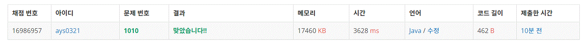

1010번 다리 놓기
문제요약
강의 서쪽과 동쪽에 있는 사이트의 개수 정수 N, M (0 < N ≤ M < 30)이 주어지고 서쪽의 사이트 개수만큼 (N개) 다리를 지으려고 할 때 다리를 지을 수 있는 경우의 수를 구하는 프로그램을 작성하라.
public class Baekjoon1010 {
public static void main(String[] args) {
Scanner input = new Scanner(System.in);
int i = input.nextInt();
for(int a = 0; a < i; a++) {
int j = input.nextInt();
int k = input.nextInt();
System.out.println(Combination(k,j));
}
}
public static int Combination(int a, int b) {
int comb = 1;
int d = b;
if(a - b <= 1) {
return comb;
}
for(int c = b; c <= a; c++) {
comb = comb * c;
}
for(int c = 1; c <= a-d; c++) {
comb = comb / c;
}
return comb;
}
}
for문으로 푸니 수가 크기가 int형으로 담을 수 있는 최대크기를 넘어서서 결과가 0이 나왔다.
public class Baekjoon1010 {
public static void main(String[] args) {
Scanner input = new Scanner(System.in);
int i = input.nextInt();
for(int a = 0; a < i; a++) {
int j = input.nextInt();
int k = input.nextInt();
System.out.println(Combination(k,j));
}
}
public static int Combination(int a, int b) {
if(a == 0 | b == 0)
return 1;
if(a == b)
return 1;
return Combination(a-1,b-1) + Combination(a-1,b);
}
}
재귀 함수로 int형의 범위를 넘지 않게 만들었다.
